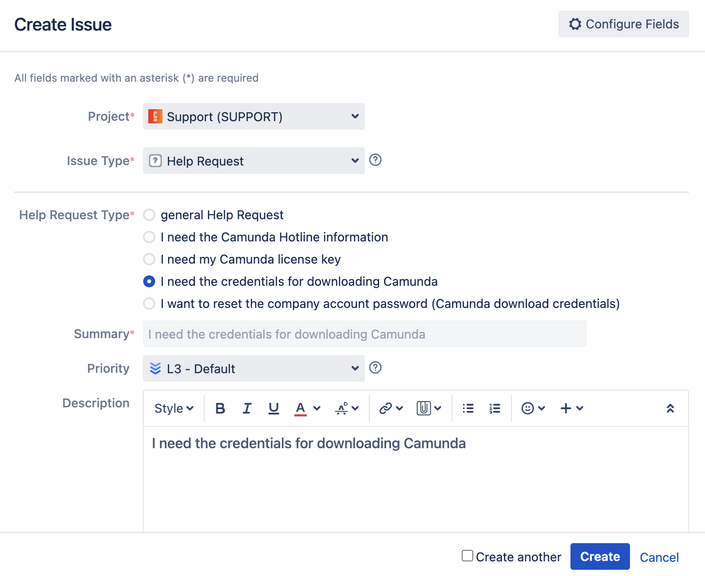

Contact
Get support for Camunda or send us your feedback via the following channels.
| Support |
|
| Bugs |
|
| |
| Feature requests |
|
| Sales/other | Contact us with sales inquiries, information about Camunda 8 performance and benchmarking, or any other queries not covered by the other channels. |
| Security issues | For security-related issues, see security notices for current information on known issues and how to report a vulnerability so we can solve the problem as quickly as possible. Note: Do not use GitHub for security-related issues. |
Locating Camunda 8 credentials
Need assistance locating your Camunda 8 credentials? You can obtain these credentials from Camunda by submitting a Help Request. To do this, take the following steps:
- Log in to Jira.
- Click Create in the navigation bar at the top of the page. This launches a Create Issue pop-up.
- In the Issue Type field, select Help Request.
- In the Help Request Type field, click the option that reads I need the credentials for downloading Camunda.
- In the Summary and Description fields, I need the credentials for downloading Camunda will populate by default.

- (Optional) Add more details, such as the priority level or authorized support contacts.
- Click Create at the bottom of the pop-up Create Issue box.
After completing these steps, your request is generated. Find additional details on submitting a self-service help request here.